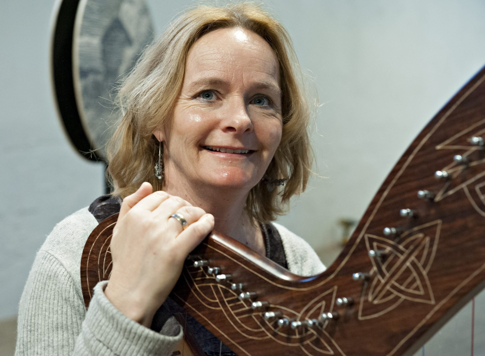

Harpetimer på Kongsberg Kulturskolen
Kongsberg er ett av tre steder i Norge hvor man kan lære å spille harpe, de to andre er Oslo og Stavanger.
Ved Kongsberg Kulturskolen er det fem harpelever, fire spiller klaffeharpe, og én spiller pedal
harpe.

Adresse:
Nansens gate 2, 3616 Kongsberg

Dager med harpe på Kongsberg Kulturskolen
Det er harpetimer på Kongsberg Kulturskolen hver tirsdag.
Utleie av harper
Det er mulig å leie klaffeharper på Kongsberg Kulturskolen.
Runi Wold-Kristiansen

Runi Wold-Kristiansen er harpelærer ved Kongsberg Kulturskolen. Hun har studert ved Norges Musikkhøgskole,
og har jobbet som freelance harpist i 35 år. De siste årene har hun hovedsakelig opptrådt i
kirker, for institusjoner, forretningsmøter, bryllup og begravelser. Hun har gitt ut to CDer så langt, en i 2016
kalt "Harp in A Landscape", og en annen i 2022 kalt "Metamorfose". Hun har også spilt med flere orkestre,
som Kringkastingsorketeret, Tromsø Symfoniorkester, Göteborg Symfoniorkester, har turnert for
Rikskonsertene, Den kulturelle spaserstokken, og Folkeakademiet, og har deltatt på Glogerfestspillerne.